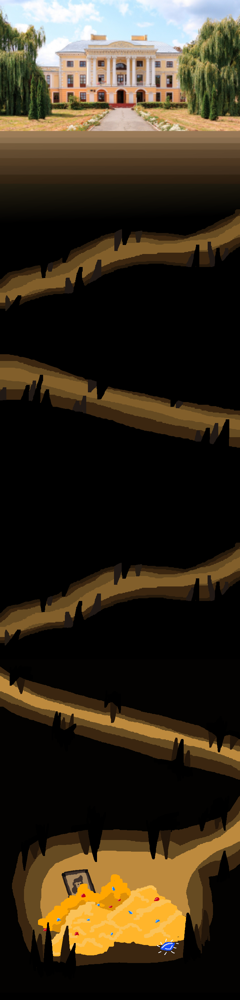

<style>
    *{
        margin: 0;
    }
    .palace-section {
      display: flex;
      flex-direction: column;
      font-family: Jersey 10, sans-serif;
      color: #fff;
      font-weight: 400;
    }
    
    .header-container {
      display: flex;
      flex-direction: column;
      position: relative;
      min-height: 179px;
      width: 100%;
      gap: 40px 100px;
      font-size: 60px;
      flex-wrap: wrap;
      padding: 40px 43px;
    }
    
    .background-image {
      position: absolute;
      inset: 0;
      height: 100%;
      width: 100%;
      object-fit: cover;
      object-position: center;
    }
    
    .logo {
      aspect-ratio: 1;
      object-fit: contain;
      object-position: center;
      width: 100px;
      border-radius: 0;
      max-width: 100%;
    }
    
    .palace-title {
      position: relative;
      flex-grow: 1;
      width: 1047px;
      margin: auto 0;
    }
    
    .content-container {
      display: flex;
      flex-direction: column;
      position: relative;
      min-height: 6000px;
      width: 100%;
      font-size: 30px;
      padding: 1170px 70px 1856px;
    }
    
    .history-intro {
    margin-top: 600px;
      position: relative;
      align-self: flex-start;

    }
    
    .construction-details {
      position: relative;
      text-align: right;
      align-self: flex-end;
      margin-top: 501px;
    }
    
    .escape-route {
      position: relative;
      align-self: flex-start;
      margin: 511px 0 0 13px;
    }
    
    .legend-conclusion {
      position: relative;
      text-align: right;
      align-self: flex-end;
      margin: 406px 0 -371px;
    }
    
    @media (max-width: 991px) {
      .header-container {
        max-width: 100%;
        font-size: 40px;
        padding: 0 20px;
      }
    
      .palace-title {
        max-width: 100%;
        font-size: 40px;
      }
    
      .content-container {
        max-width: 100%;
        padding: 100px 20px;
      }
    
      .history-intro,
      .construction-details,
      .escape-route,
      .legend-conclusion {
        max-width: 100%;
        margin: 40px 0;
      }
    
      .construction-details {
        margin-right: 10px;
      }
    
      .legend-conclusion {
        margin-bottom: 10px;
      }
    }
    .header-wrapper {
        display: flex;
        align-items: center;
        justify-content: center; 
        width: 100%;
        margin-left: 30px;
        margin-top: 50px;
    }
    .back-button {
        margin-right: 20px;
        background: whi;
        border: none;
        border-radius: 50%;
        width: 70px;
        height: 70px;
        display: flex;
        align-items: center;
        justify-content: center;
        cursor: pointer;
        z-index: 20; 
        transition: transform 0.2s ease; 
        background-image: url('images/back-arrow.png');
        background-size: 70%; 
        background-repeat: no-repeat; 
        background-position: center; 
    }

    .back-button:hover {
        transform: scale(1.2); 
    }
    .hero-background {
        position: absolute;
        inset: 0;
        height: 100%;
        width: 100%;
        object-fit: cover;
        object-position: center;
    }
    .hero-title {
        position: relative;
        flex-grow: 1;
        margin: auto 0;
        font-size: 60px;
        display: flex;
        align-items: center; 
        margin-left: 190px;
    }
    @media (max-width: 991px) {
        .hero-title {
            max-width: 100%;
            font-size: 40px;
        }
    }
    .hero-banner {
            display: flex;
            flex-direction: column;
            position: relative;
            min-height: 179px;
            width: 107.3%;
            align-items: start;
            flex-wrap: wrap;
            justify-content: space-between;
            font: 60px Jersey 10, sans-serif;
        }
    </style>
    
    <section class="palace-section">
      <header class="hero-banner">
        
        <div class="header-wrapper"></div>
            <button class="back-button" onclick="window.history.back();"></button>
            <h1 class="hero-title">«Палац Грохольських»</h1>
            </div>
      </header>
    
      <main class="content-container">
        

        <p class="history-intro">
          Старий палац Грохольських, що велично стоїть на пагорбі, мовчазно спостерігає за змінами, які несе час. З його стін відлунюють історії минулого, що густо переплітаються з таємницями й легендами. Серед цих історій особливе місце займає розповідь про секретний підземний хід, який звели за часів кріпацтва для захисту від повстань.
        </p>
    
        <p class="construction-details">
          Коли навколо палацу кипіла праця селян, що виконували волю панів Грохольських, а на горизонті почали з'являтися хмари невдоволення, пани вирішили, що необхідно подбати про власну безпеку. Грохольські розуміли, що влада може похитнутись, і, як мовиться, краще солому стелити зарання. Так і з'явилася ідея збудувати таємний підземний хід, який починався десь під палацом і виводив далеко за межі маєтку. Хід майстерно замаскували: входи ховалися під підлогами кімнат, у покинутих коморах, або ж під таємними дверима, які відкривалися лише обраним. Тільки найбільш віддані люди знали, де знаходиться цей порятунок для панів, і оберігали цю таємницю як зіницю ока.
        </p>
    
        <p class="escape-route">
          Кажуть, що самі Грохольські ніколи так і не скористалися своїм таємним шляхом, адже повстання минули стороною. Та коли в Україні встановилася радянська влада, їх нащадки поспіхом покидали свої маєтки, тікаючи до Польщі. У метушні втечі не все вдалося вивезти з собою. Вже в ті буремні дні заговорили, що Грохольські заховали частину своїх скарбів десь у підземних лабіринтах, адже вивезти всі цінності за кордон було неможливо. Шляхом темних коридорів палацу, під охороною ночі, в підвали заносили важкі скрині, сповнені коштовностей, старовинних меблів, золотих прикрас, фамільного срібла і навіть таємних документів, які могли б скомпрометувати панів у новій реальності.
    
          Проте жоден зі скарбів так і не був знайдений, ні місцевими жителями, ні радянськими службами. Після втечі Грохольських, палац пристосували під лікарню, і, попри всі зміни, підземні льохи і сьогодні активно використовуються персоналом для зберігання медичних засобів, але ніхто й досі не наважився шукати старий вхід до легендарного підземного лабіринту. Медсестри, лікарі та працівники нерідко розповідають про дивне відчуття, ніби їх постійно щось або хтось спостерігає з темних закутків льохів. Старі двері іноді скриплять, наче самі собою, а з глибоких коридорів час від часу долинають дивні звуки — ніби хтось потай рухається у пітьмі.
        </p>
    
        <p class="legend-conclusion">
          Кажуть, що у місячні ночі, коли тіні огортають палац, на подвір'ї можна побачити примарний силует в старовинному вбранні, що повільно проходить до місця, де, за чутками, був один із входів до підземного ходу. Старожили вірять, що це привид одного з панів, який повертається, аби перевірити, чи залишаються його скарби схованими і недоторканими. Можливо, підземний хід ще існує, приховуючи багатства минулих століть, а можливо, він давно засипаний під товщею землі та часу — як і багато інших таємниць цього давнього палацу.
        </p>
      </main>
    </section>